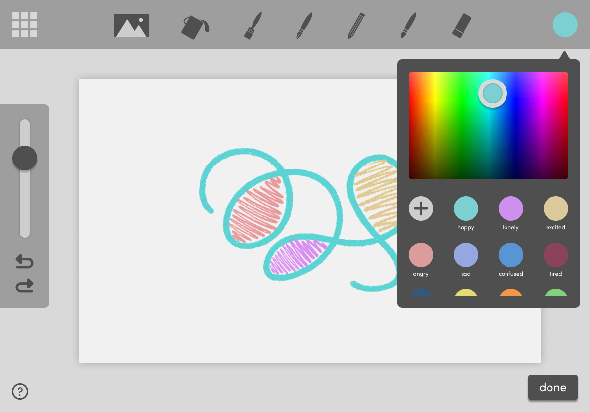
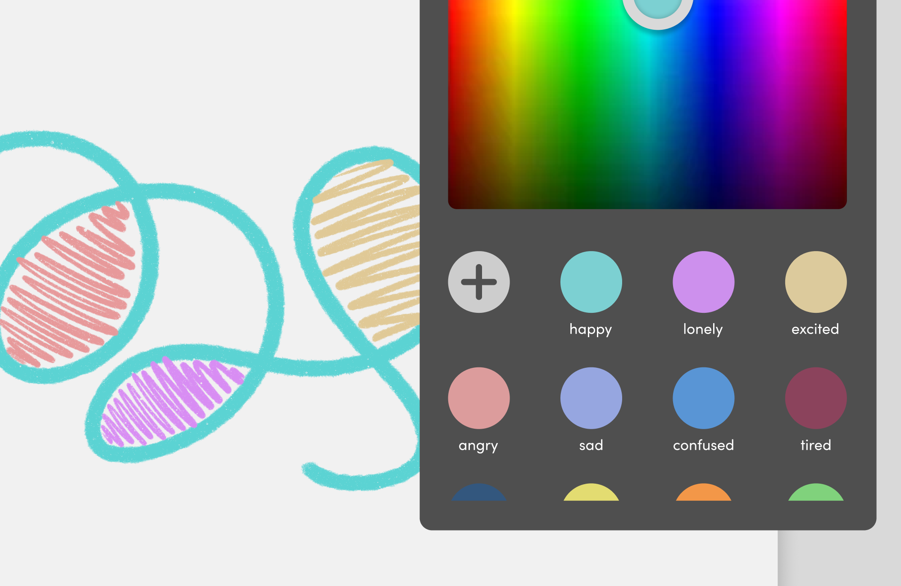
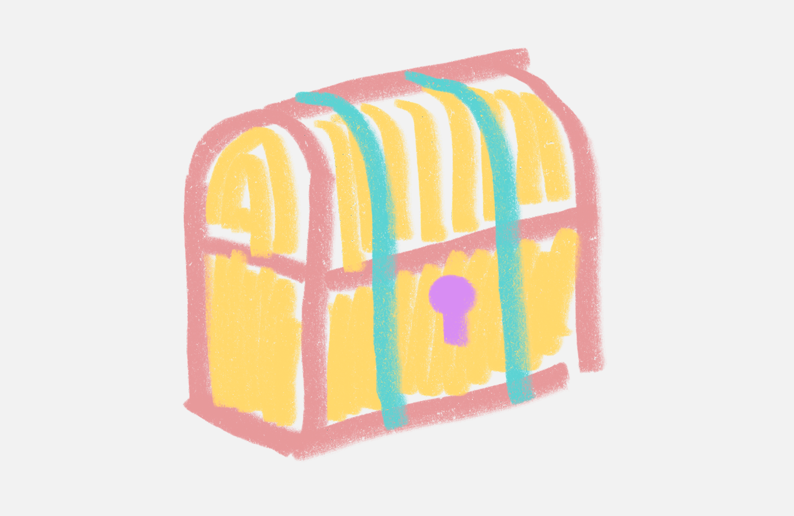
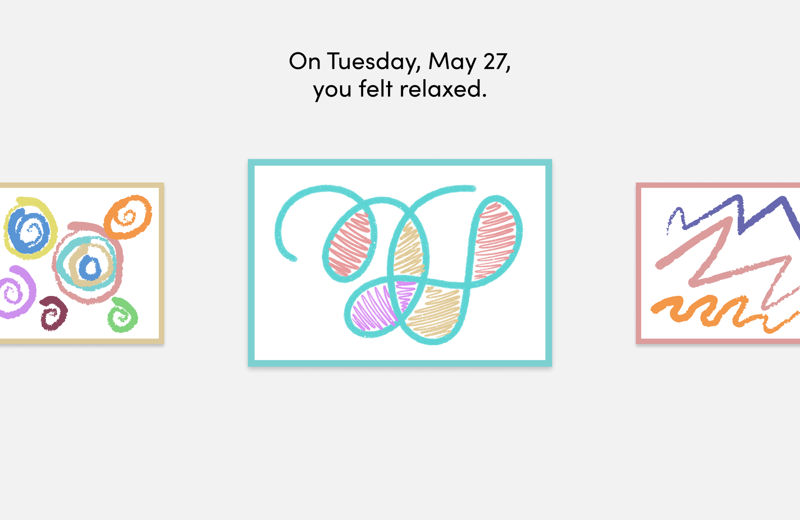
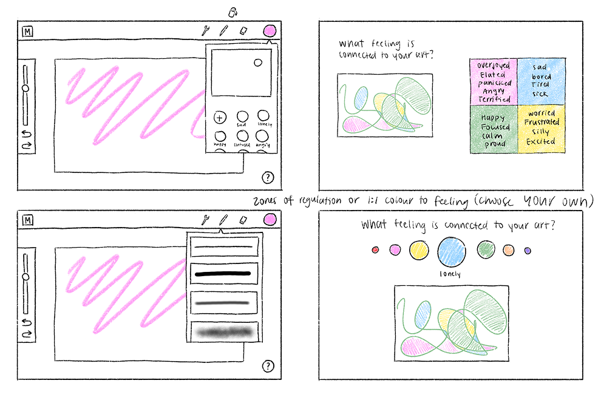
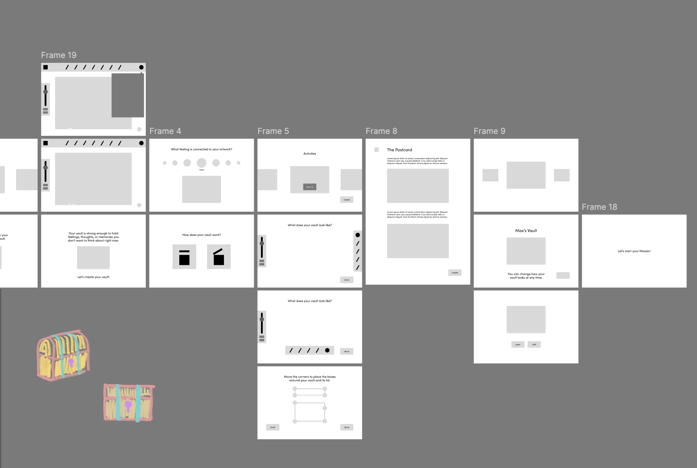
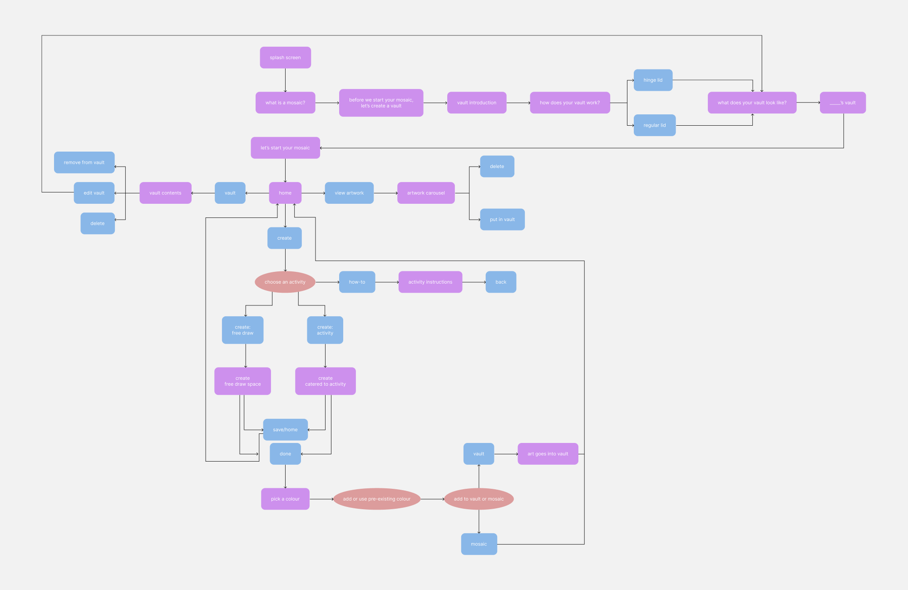
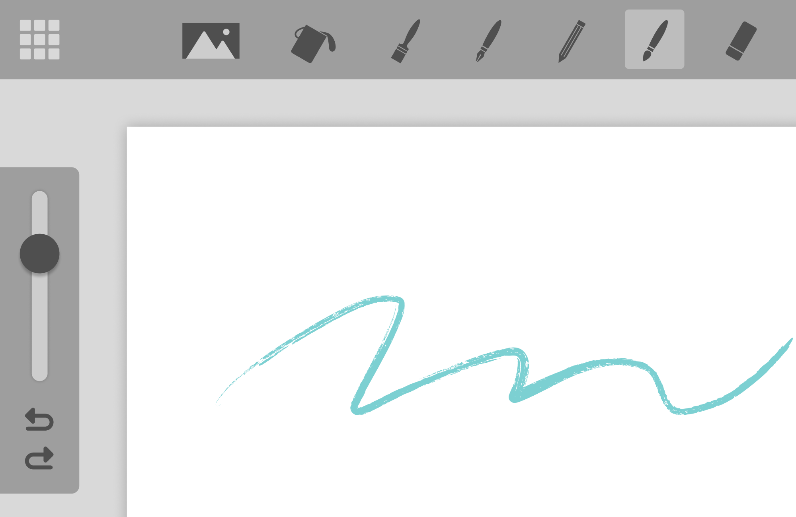
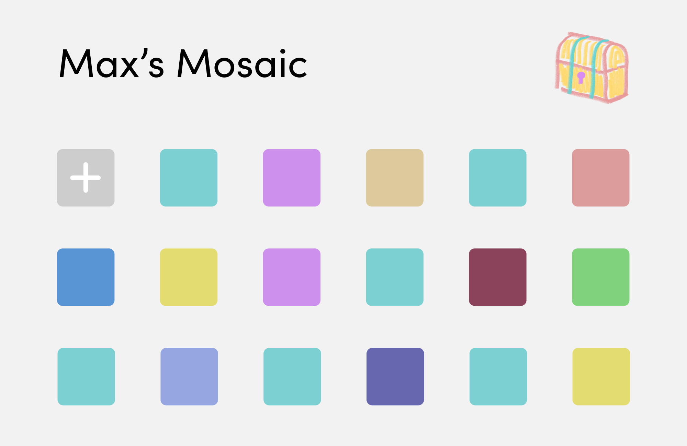
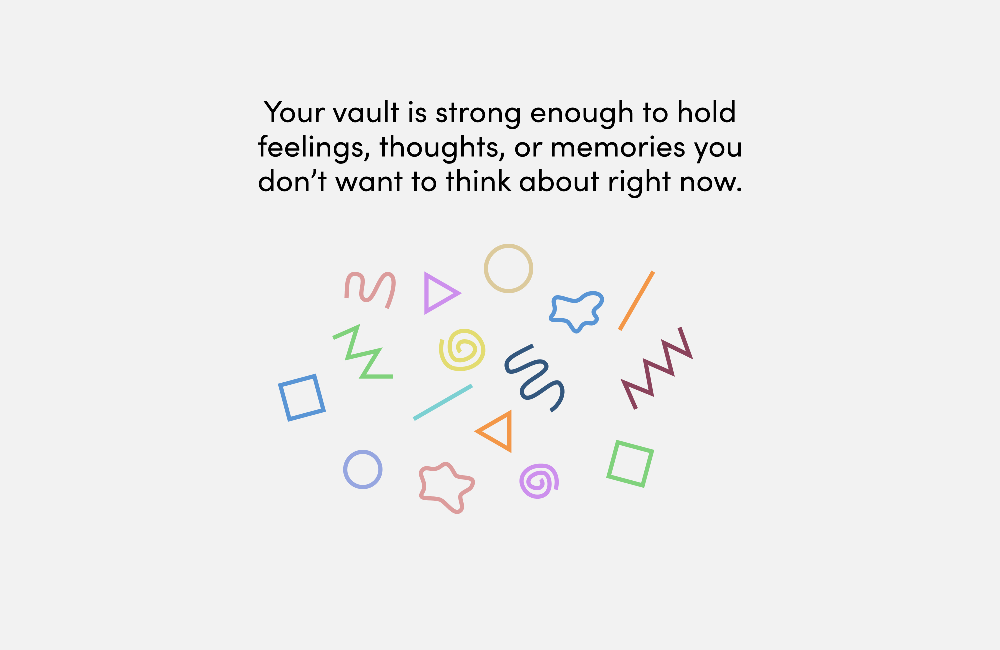

Mosaic
DVB 305 Queensland University of Technology
In this project, I drew upon my health sciences background, combining scientific and design practices, to develop a children's emotional regulation tool for creative self expression
Role
UX Design
Research
Interface Design
Duration
May 2025 -
Jun 2025
3 Weeks

The Problem
Forging a path to positive mental health outcomes begins in early childhood.
Currently, most digital tools for mental health management cater towards adolescents and adults. I wanted to explore children's mental wellbeing and challenge myself to design for young users from the ages of six to twelve.
Objective
Provide children with a tool to creatively express their emotions and mental health experiences, keep track of their moods, and spark conversations about mental health in young children.
The Solution
A judgement-free environment to express thoughts, emotions, and memories in a visual medium.
Users' creations can be kept either as part of their Mosaic, a web of their experiences, or locked away in a personalized vault for safekeeping. Mosaic is an outlet to creatively express experiences and recognize and honour feelings.
Activities
All children work a little differently. Users can choose from a variety of activities taken from existing art therapy strategies or create freely in the making environment.

Colours
The use of colour in Mosaic is adapted from the Zones of Regulation, a framework used to sort feelings into zones to make them easier to process. Users can choose colours that represent what they are feeling to practice mindfulness of their emotions.

The Vault
Taken directly from the commonly used therapeutic strategy called containment, users design a personalized vault to store what they wish to address at a later time to minimize feeling overwhelmed.

Gallery
Mood tracking in young people benefits self awareness and allows them to release inner thoughts outwards. Users' creations, when not in the vault, are stored in their Mosaic: a unique and deeply personal gallery of their experiences which can be reflected on.
Research
Mosaic is based on evidence.
I conducted stakeholder mapping and thorough research about children's mental health, emotional regulation and recognition, art therapy, mood tracking, and therapeutic practices proven to promote mental wellbeing in children. My overall objective was to implement therapeutic strategies in a non-clinical, creative, and accessible way.
Question
How can children practice identifying moods to improve emotional regulation?
Question
How can children express their thoughts, emotions, and experiences digitally?
Question
How can children track feelings to build self reflection skills?
Research
Children can benefit from categorizing their feelings into "zones", making them easier to identify and talk about.
Research
Image-making and creation in a safe environment allows for exploration of feelings that can't be put into words.
Research
Mood tracking promotes self awareness while containerizing thoughts helps detach from negative emotions.
User Goal
Identify emotions
User Goal
An environment to express themselves independently
User Goal
Track and access past moods
Design
Sketches to wireframes to prototype.
Designing an interface for Mosaic required many iterations of sketches, wireframes, and a prototype. The most difficult part was making sure features were accessible for young children's motor skills.


Challenges
How do I design an intuitive, low-stimulation interface for young children?
My biggest challenge was designing an interface that supports young children's cognition. So, my design considerations drew on research of cognitive science, HCI, and UX design for children.

Processes
Mosaic is designed to minimize decision making required to carry out a user goal. Short, consistent procedures allow users to learn and memorize how to use the tool.

Visual Elements
Large, spaced out interactive elements accommodate young children's motor skills. Icons are used in place of words to support recognition and reduce the need for reading.

Interface
I opted for a simple design for low-stimulation, minimizing the amount of visual elements on screen to avoid cognitive overload.

Instructions
To assist with learning, I implemented an onboarding process that guides users through the tool. Help and instructions can be accessed at any time.
Takeaways
Designing for young children is difficult.
I learned so much about my research topic and spent many late nights editing the user flow diagram. My most important takeaway was learning how to define a project, problem space, and scope independently. Doing so forced me to think holistically, trust myself with decision making, and be thorough with my considerations. I would eventually like to conduct stakeholder and user research/testing to further this project.